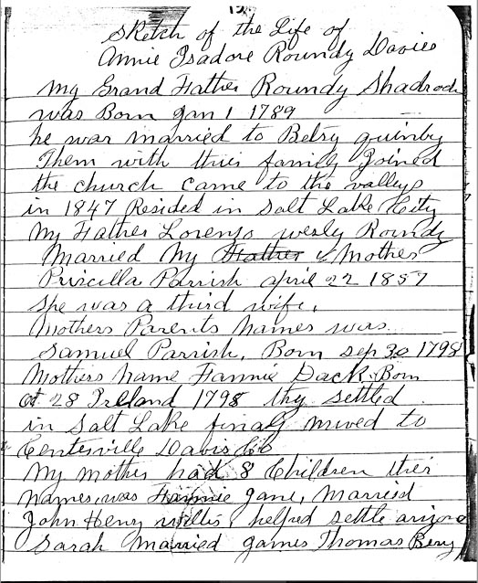

|
 |
NOTE:The writing in this book is not done in sequential order, but rather in blocks of pages in the book. The page That she identifies as her story starts on page 13 on the right side. I designate the left side with an "a" and the right side with "b" - Joseph Buchanan, 12 Jan. 2008
Click HERE to read the transcribed text of the history. |